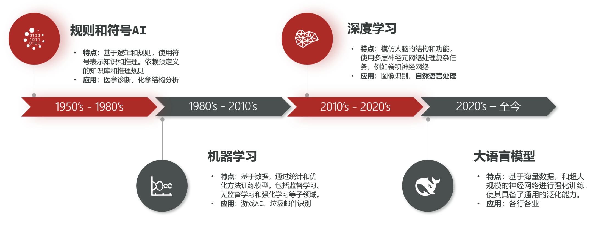

人工智能的发展
本章我们先了解AI的发展历史以及大模型应用开发的基本技术。
版本与事实边界：本章保留了入门教学中的历史截图、模型名和控制台操作。模型名称、上下文长度、价格、额度、网页布局和 API 参数都会变化；这些内容只能作为当时的示例，运行或面试回答前要以提供商官方文档为准。API Key 只放在环境变量或 Secret Manager 中，不要写入仓库、截图或日志。
AI，人工智能（Artificial Intelligence），是一门致力于使机器能够模拟人类思维、学习与解决问题的技术。
自文明萌芽以来，人类始终怀有“造物”的冲动——渴望赋予非生命以智慧。尽管AI在近年才成为全球焦点，但其思想的种子，早在20世纪50年代便已埋下。

AI发展的四大阶段：
-
第一浪潮：规则与符号的探索 AI的诞生始于“符号主义”学派。在20世纪50至70年代，研究者相信智能可以通过预设的逻辑和符号规则来复刻。这些系统使用形式化的符号来表示知识，并依据严密的推理规则进行推导。然而，现实世界的模糊与复杂远超人工规则的描绘，使得此类AI局限在如象棋对弈、定理证明等封闭的专业领域，难以走向广阔天地。
-
第二浪潮：统计与学习的兴起 至1980年代，AI发展迎来了关键转折，从“符号主义”正式迈入“联结主义”，机器学习成为新的引擎。研究者不再试图编写全部规则，而是让机器从数据中自行发现规律、总结模式。这一范式转换，使AI从封闭的规则库走向开放的真实数据，奠定了现代AI的基础，并在垃圾邮件过滤、推荐系统等场景中初露锋芒。
-
第三浪潮：深度神经网络的突破 21世纪初，随着海量数据与强大算力（特别是GPU）的涌现，深度学习——这一基于深层神经网络的机器学习分支——将AI推向了新的高潮。深度网络能够自动提取数据的多层次抽象特征，从而在图像识别、语音理解、自然语言处理等领域取得了远超传统方法的精度。它的成功，标志着AI在处理感知类任务上的能力首次接近乃至超越了人类水平，并催生了诸如人脸识别、智能语音助手等广泛应用。
-
第四浪潮：大模型与生成式AI的革命 真正的普及风暴始于2020年代大语言模型（简称"大模型"）的崛起。这一次，技术变革的焦点从"专用型"的感知智能，转向了"通用型"的认知智能。通过简单的对话，任何人都能指挥AI完成写作、编程、数据分析等复杂任务，技术壁垒被空前降低。大模型不再仅是实验室的成果或新闻中的概念，它已成为普通人日常工作与生活中触手可及的智能伙伴，从根本上重塑了生产力与创造力模式，标志着AI真正融入了人类社会结构的核心。
那么，问题来了：这个看似无所不能的大模型，它的"大脑"里究竟在发生什么？它的"智能"从何而来？